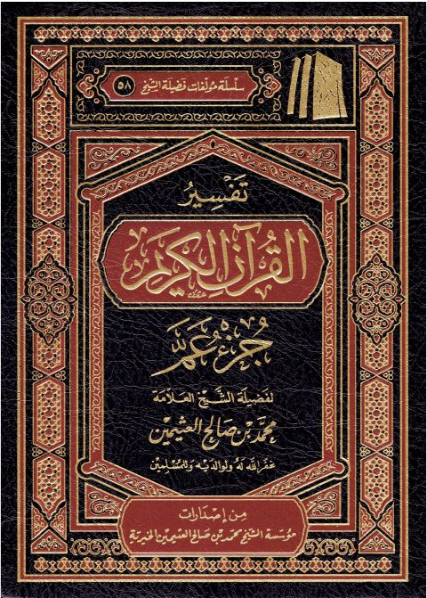

تفسير القرآن الكريم جزء عمَّ
Authors: محمد بن صالح العثيمين
Publishers: مؤسسة محمد بن صالح العثيمين الخيرية
Download Downloads need an internet connection.
- Published
- 1444هـ 2023م
- Country
- القصيم، السعودية
- Edition
- 13
- Volumes
- 1
- Pages
- 441
- Type
- كتاب
- Category
- التفسير وعلوم القرآن
Description
▫️ العنوان: تفسير القرآن الكريم جزء عمَّ ▪️ المؤلف: #محمد_بن_صالح_العثيمين ▫️ الناشر: #مؤسسة_محمد_بن_صالح_العثيمين_الخيرية ▪️ تاريخ النشر: 1444هـ 2023م ▫️ بلد النشر: القصيم، #السعودية ▪️ الطبعة: 13 ▫️ عدد الأجزاء: 1 ▪️ الصفحات: 441 ▫️ نوع الوعاء: #كتاب ▪️ التصنيف الرئيسي: #التفسير_وعلوم_القرآن ۪